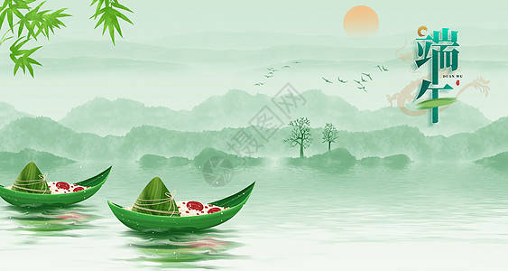
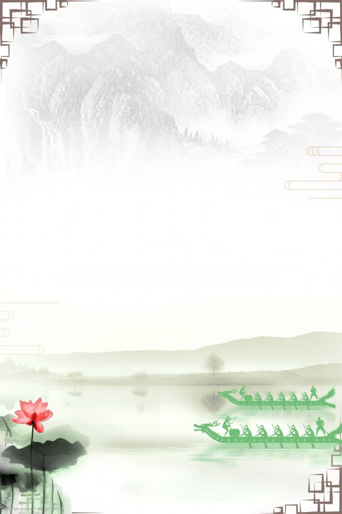
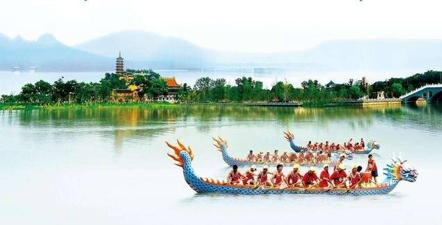
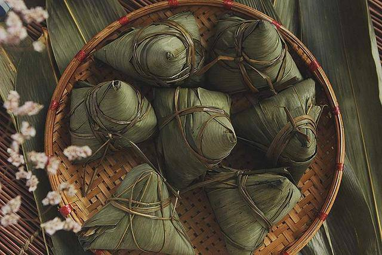
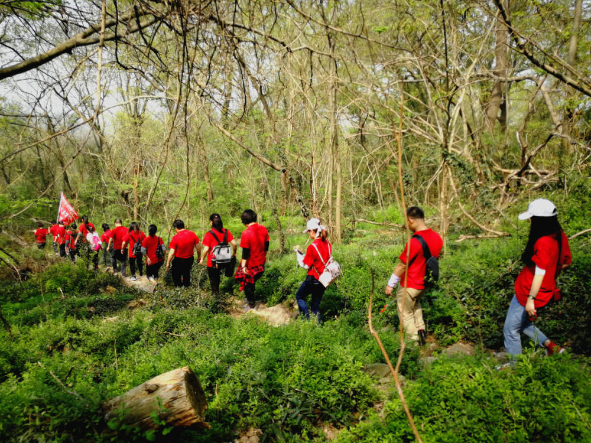
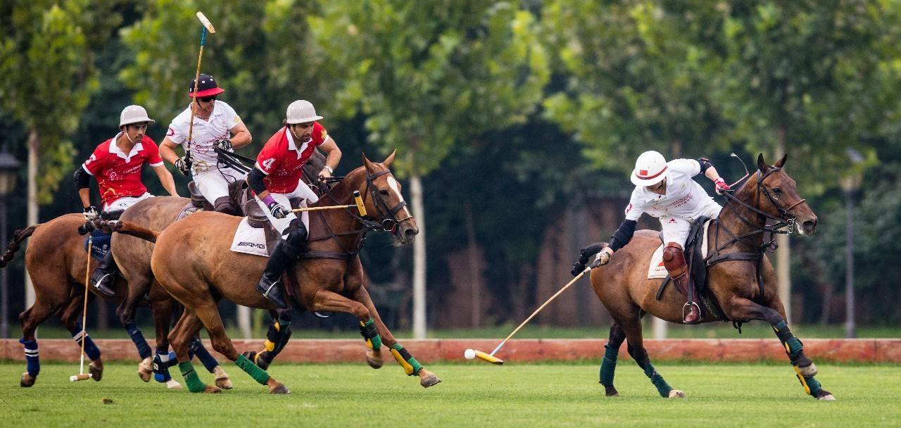
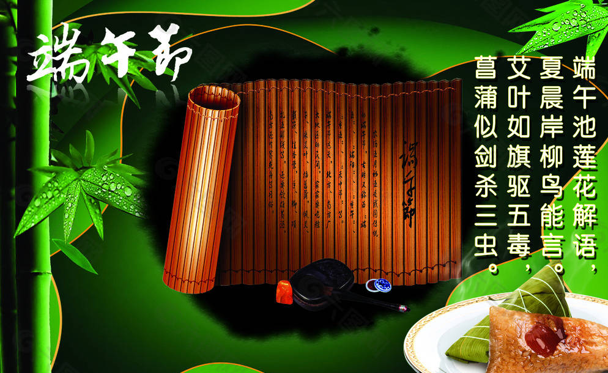

首页
端午节时间
端午节来历
端午节习俗

龙舟赛寓意着团结、协作、勇气与智慧。参与龙舟赛的队员需要相互协作、默契配合，才能向前划桨，迎着急流、冲过终点线。这是一个需要整个队伍共同努力、互相鼓励和依靠的过程。同时，在整个比赛过程中，队员们需要发挥出自己的勇气和智慧，适时调整策略，做出正确的决策，才能赢得比赛的胜利。

端午节吃粽子有三种寓意,第一种寓意“光宗耀祖”,古代寓意“功名得中”; 第二种纪念屈原; 第三种表达对健康平安的美好希冀和向往。

踏青在古代又叫春游、探春、寻春。踏青一般指初春时到郊外散步游玩。旧时曾以清明节为踏青节，不过，踏青节的日期因时因地而异，有正月八日的，也有二月二日或三月三日的，后来则以清明出游踏青居多。 踏青这种节令性的民俗活动，在我国有着悠久的历史，其源泉是远古农耕祭祀的迎春习俗。《尚书·大传》曰：春，出也，万物之出也。在西周，万物萌动之时，迎春郊游于野外就已成为礼制。

马球，指的是骑在马上，用马球杆击球入门的一种体育活动。马球在中国古代叫“击鞠”，发明始于汉代，兴盛于唐宋，在东汉后期，曹植《名都篇》中就有“连骑击鞠壤，巧捷惟万端”的诗句来描写当时人打马球的情形。
